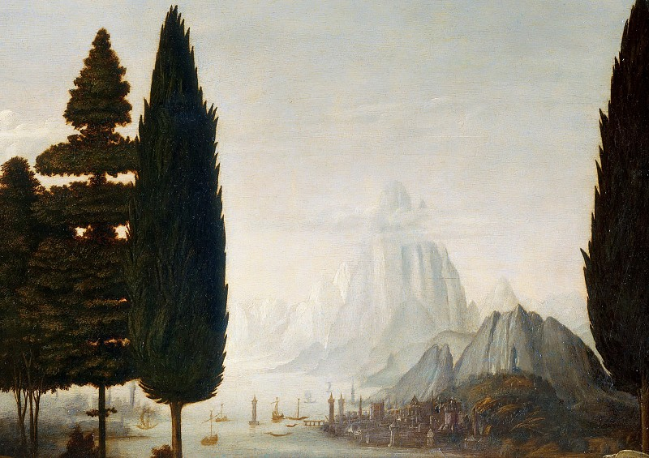
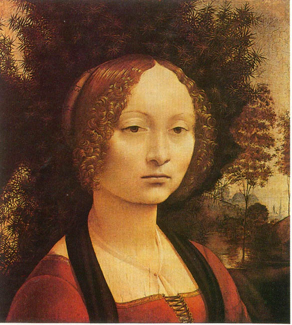
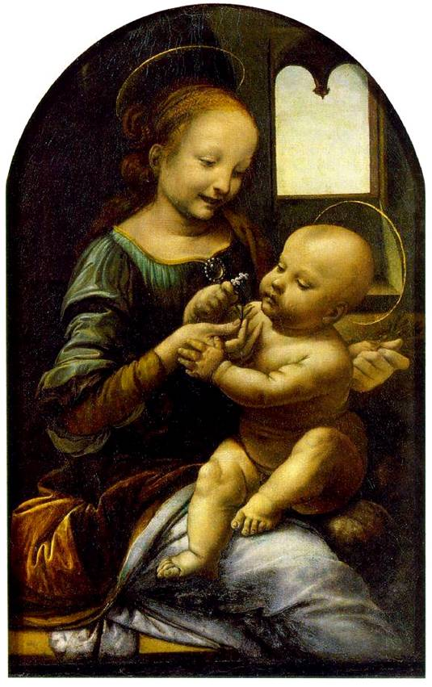
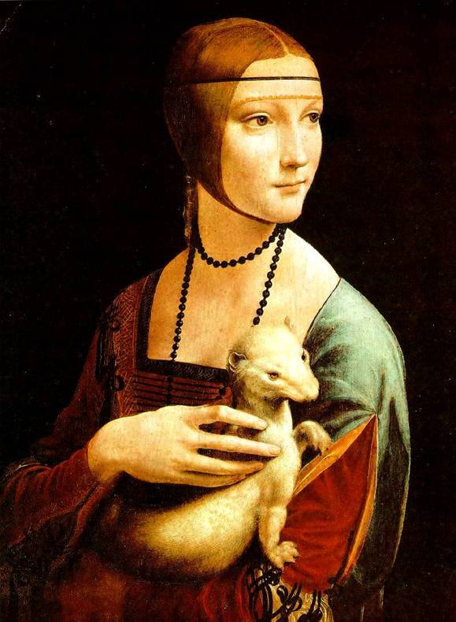

Відео "Discovery:Справжній код да Вінчі"
Міні-серіал "Життя Леонардо да Вінчі
Документальний фільм: Leonardo. Seeking the truth

Фільм: Код да Вінчі
Серіал: BBC Частная жизнь шедевров

Список картин
Благовещение (1475-1480) – Уффици, Флоренция, Италия 

Джиневра де Бенчи (~1475)– Национальная галерея искусств, Вашингтон, США.Мадонна Бенуа (1478-1480) – Музей Эрмитажа, Санкт-Петербург, Россия

Дева с Цветами (1478-1481) – Старая Пинакотека, Мюнхен, ГерманияПоклонение волхвов (1481) – Уффици, Флоренция, Италия
Сесилия Галлерани с Горностаем (1488-90) – Музей Чарторыйских, Краков, Польша
Музыкант (~1490) – Пинакотека Амброзиана, Милан, ИталияМадонна Литта, (1490-91) – Эрмитаж, Санкт-Петербург, Россия
Ла Белл Феррониер, (1495-1498) – Лувр, Париж, Франция Тайная вечеря (1498) – Женский монастырь Станции Мария Делле Грацие, Милан, ИталияМадонна в гроте (1483-86) – Лувр, Париж, Франция
Мадонна в гроте или Дева в Гроте (1508) – Национальная галерея, Лондон, Англия Леда и Лебедь (1508) – Галерея Боргезе, Рим, ИталияМона Лиза или Джоконда – Лувр, Париж, Франция
Мадонна с младенцем со Св.Анной (~1510) – Лувр, Париж, Франция Иоанн Креститель (~1514) – Лувр, Париж, ФранцияВакх, (1515) – Лувр, Париж, Франция.